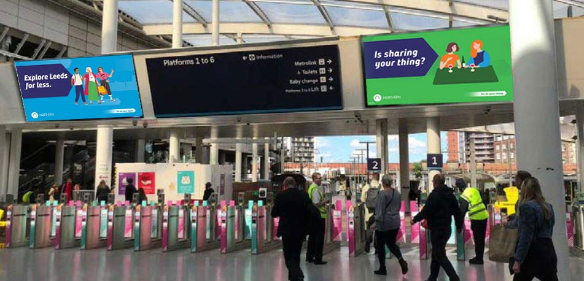

Most London Underground advertising guides start with a big passenger number and finish with a contact form. That is not much use if you are trying to work out whether the Tube is actually right for your campaign.
The Underground is one of the strongest OOH environments in the UK, but it is not automatically the right buy for every brand. The network is expensive because the audience is concentrated, the inventory is limited and some stations are exceptionally busy. The mistake is assuming that the most expensive station or biggest format is automatically the best one.
The campaigns that work are usually the ones where the station choice, format and creative all match the objective.
I have planned Underground campaigns across different budgets and formats. The pattern is fairly consistent. The campaigns that disappoint tend to spread the budget too thinly, chase Zone 1 for the sake of it, or put a generic piece of creative into a format that needed something more considered.
This guide answers the questions I would want answered before spending the money: what does London Underground advertising cost in 2026, what are the main formats, what does each format actually do, what can different budgets buy, and where does the Tube genuinely make sense for a brand?
The numbers that actually matter
The London Underground carried 1.216 billion passenger journeys in 2024/25. That remains the latest complete annual figure published in TfL's annual reporting cycle at the time of this update. TfL also publishes detailed demand datasets for 2025, which are useful when planning at station level.
The network has 272 stations. That number matters because the Tube is not one audience. A campaign around Bank is not the same proposition as a campaign around Brixton, Stratford, South Kensington or a central London leisure station. The headline reach is useful. The station-level decision is more useful.
1.216bn
Annual Underground journeys
2024/25 · TfL annual reporting
272
Stations on the network
TfL / London Underground network information
2 weeks
Typical campaign period
Longer bookings can change economics and availability
Excl. VAT
Pricing basis
Production and artwork can be additional
For planning purposes, think about three things together: volume, audience and dwell. A passenger waiting on a platform is in a very different advertising environment from someone driving past a roadside billboard. They have time to process the message. They may see it repeatedly. They may also see several executions during one journey.
Two questions decide whether the Tube earns its place in your plan.
Strong
What the Tube is good at
Awareness, brand salience, launches and London-specific positioning. Dwell time means passengers can actually process the message.
Weaker
What it is less suited to
Hyper-local direct response, where a bus shelter or roadside format can put the message much closer to the actual point of sale.
2026 network facts
| Metric | 2026 planning figure | Source / note |
|---|---|---|
| Annual London Underground journeys | 1.216bn in 2024/25 | TfL annual reporting |
| London Underground stations | 272 | TfL / London Underground network information |
| 2025 station demand data | Available through TfL NUMBAT datasets | Useful for station and line planning |
| Typical campaign period | 2 weeks | Longer bookings can change economics and availability |
| Pricing basis | Media cost, excl. VAT | Production and artwork can be additional |
Who actually uses the Tube? The audience question.
The broad London Underground audience is valuable because it combines scale with a high concentration of commuters, professionals, students, leisure visitors and tourists. But a generic statement such as "the Tube reaches affluent Londoners" is not enough to plan a campaign.
B2B
Professional & financial
For B2B, professional services and financial audiences, stations such as Bank, Moorgate, Liverpool Street, Canary Wharf and London Bridge can be more relevant than simply buying the biggest available network package.
Younger
Students & evening footfall
For younger audiences, university areas and stations with strong evening and weekend activity can be more useful.
Leisure
Tourists & visitors
For leisure and tourism, central stations around Oxford Circus, Leicester Square, Piccadilly Circus and Covent Garden can make more sense.
Affluent residential catchments
For affluent residential audiences, stations serving higher-value residential catchments may be worth considering, particularly when the campaign is designed around local awareness rather than city-wide reach.
Do not buy "the Underground". Buy the part of the Underground where your audience actually spends time.
Every London Underground advertising format explained
The rate card needs to be clear about the buying unit. A £300 panel and a £15,000 station package are not comparable products. Some formats are bought per panel, some per screen, some per line pack and some per station. All figures below are indicative two-week media costs, excluding VAT.
| Format | Indicative 2-week media cost | Buying unit | Best for |
|---|---|---|---|
| Tube car panels | From £10 per panel* | Panel / line pack | Frequency and longer copy |
| Escalator panels | From £125 per panel* | Panel / run | Sequential storytelling |
| 4-sheet platform poster | From £300 per panel* | Panel | Awareness and local station targeting |
| Digital 6-sheet (D6) | From £1,500 per screen | Screen | Flexible digital awareness |
| 6-sheet static | From £1,750 per panel | Panel | High-frequency station presence |
| 12-sheet static | From £2,000 per panel | Panel | More visual scale |
| Digital 12-sheet (D12) | From £3,000 per screen | Screen | Larger digital impact |
| 16-sheet cross-track | From £1,000 per panel* | Panel | Platform impact |
| 48-sheet cross-track | From £1,500 per panel* | Panel | Large-format brand presence |
| Digital escalator / ribbon | From £15,750 per week* | Station run | Motion and premium launches |
| Digiwall / digital gateway | From £12,000, site dependent | Station package | Immersive launches and standout creative |
| Station domination | From £15,000* | Station package | Full-station ownership |
The formats, one by one
In-carriage
Tube car panels
Tube car panels sit inside the carriage, above seats and doors. They are one of the strongest formats for frequency because the audience has genuine journey time to absorb the message. They are particularly useful when the message needs more than a quick glance: a recruitment campaign, financial product, service proposition or brand story can work here because the passenger is sitting or standing in a relatively controlled environment. The catch is scale. Tube car panels are typically bought as a pack rather than as one or two isolated panels. The headline per-panel rate therefore needs context; the minimum booking and pack structure matter more than the small headline number.
Sequential
Escalator panels
Escalator panels are about sequence. The passenger moves past a run of creative while travelling between levels, giving the campaign an opportunity to tell a story rather than repeat one static message. This is one of the formats where creative quality really matters. If every panel carries the same artwork, you are not making the most of the environment. Use the movement of the audience to build the message. For launches, entertainment, fashion and brands with a strong visual idea, escalator runs can be excellent. They are less attractive when the campaign simply needs cheap, broad frequency.
Platform
4-sheet platform posters
The 4-sheet is one of the most accessible classic Underground formats. It sits at platform level and works because the passenger is stationary while waiting for a train. The strength is simplicity: a good 4-sheet can deliver a clear brand message in a few seconds, while a bad one becomes a wall of small type that nobody reads. Outer-zone inventory can offer a much better cost base than premium Zone 1 locations. If the campaign is local or the audience is spread across London, do not assume Zone 1 is automatically the right answer.
Digital
Digital 6-sheet (D6)
The Digital 6-sheet should now be treated as a core Underground format rather than an optional add-on. The unit is broadly the digital equivalent of the familiar 6-sheet footprint, with motion capability and the flexibility to change creative without reprinting. That matters when a campaign has several messages, needs dayparting, or wants to react to live activity. D6 is particularly strong for brands that want digital flexibility without stepping all the way up to a premium station takeover.
Static
6-sheet static
Static 6-sheets are a familiar Underground format and sit between the smaller 4-sheet and larger cross-track formats in terms of visual presence. They are useful when the objective is repeated visibility across a selected group of stations. Static also has one practical advantage that is sometimes overlooked: the creative remains present for the whole booking rather than competing for a share of screen time. For straightforward awareness campaigns, that can make static the better buy. Digital is not automatically better simply because it moves.
Static
12-sheet static
The 12-sheet gives the creative more physical presence than a 6-sheet without moving into the price and scale of the largest cross-track formats. It is a useful middle ground for brands that want more visual impact in corridors, ticket halls and other high-footfall areas. The larger canvas gives creative teams more room to build a visual idea, but the basic rule still applies: passengers need to understand the message quickly. Use the 12-sheet when the extra scale genuinely improves the creative. Do not pay for more surface area just to make a logo bigger.
Digital
Digital 12-sheet (D12)
Digital 12-sheets sit above the D6 in scale and are useful when the campaign needs more visual presence but does not need a full digital gateway or station takeover. The format is well suited to product launches, moving image, premium consumer brands and campaigns where the visual idea benefits from a larger digital canvas. It also gives the advertiser the flexibility to run multiple executions during the booking period. The important comparison is not simply D12 versus D6. It is D12 versus buying more D6 screens. Sometimes breadth wins. Sometimes one larger screen in the right station wins.
Cross-track
16-sheet cross-track
The 16-sheet sits opposite the platform and faces passengers while they wait for a train. That makes the platform dwell time work in your favour. It is a strong choice when the creative needs to be read from a distance and the brand wants a clear hero placement without paying for a full station package. Zone and station category have a significant effect on price: current Loud! OOH planning figures start from around £1,000 per panel in outer zones, with premium central locations higher.
Cross-track
48-sheet cross-track
The 48-sheet is the classic big Underground statement. It is large, obvious and particularly effective when the campaign idea is built around visual impact. It is not necessarily the best format for every brief. If the target audience is concentrated in a small number of stations, several smaller placements can create more frequency. If the objective is to make the brand look established and significant, the 48-sheet earns its place. Current planning figures start from around £1,500 per panel, with Zone 1 and premium station locations commanding more.
Premium
Digital escalator panels & ribbons
Digital escalator formats take the sequential idea and add motion. They are premium products and should be treated as such. They make sense for launches, entertainment, fashion, automotive and campaigns where movement is part of the idea. They are less compelling for a static product message that would work perfectly well on a poster. Current planning figures can start around £15,750 per week for premium digital escalator or ribbon activity, but these are highly location and package dependent.
Premium
Digiwalls & digital gateways
Digiwalls are the format to consider when the campaign needs to own a physical space rather than simply occupy an advertising panel. The execution can combine large-format digital screens with surrounding printed or branded surfaces, depending on the station and package. Bond Street is a good example of the type of environment where large-format digital can become part of the architecture of the journey. Planning figures start around £12,000 for a premium digital gateway or Digiwall-type package, with major locations and more extensive packages moving considerably higher. Treat these as bespoke products rather than commodity inventory. This is where creative and media planning need to be joined together: a Digiwall can be spectacular, but the creative needs to justify the environment. If the idea is just a standard 10-second advert blown up on a bigger screen, the premium is harder to defend.
Takeover
Station domination
A station domination is exactly what it sounds like. Instead of buying one format, the brand takes over a defined station environment using multiple surfaces. This can include posters, digital screens, escalator media, ticket halls, corridors and platform placements depending on the station. It is the right choice when the station itself needs to become part of the campaign. It is not the right choice simply because a large budget is available. Smaller station packages can start around £15,000 for two weeks, while flagship central London stations can move into five-figure or six-figure territory. Lead times are longer and availability is limited.
The 2026 rate card
All prices are indicative 2026 media costs, excluding VAT and production unless stated. Standard campaign period is two weeks unless stated. Prices vary by station, zone, availability, trading period and package. Confirmed media-owner pricing applies at booking.
The full format-by-format table sits above in Every London Underground advertising format explained, with every format's indicative two-week media cost and buying unit. For all UK OOH formats including the Underground, see the 2026 rate card.

What will different budgets actually buy?
Individual panel prices only tell you so much. Here is what Underground advertising actually looks like across different total budgets.
Under £5,000
Focused
Keep it focused
You are unlikely to buy meaningful London-wide coverage. Instead, choose a small group of stations or a single audience cluster and make the creative work hard. A focused 4-sheet, 6-sheet or digital 6-sheet plan can be more useful than scattering the money.
£5k-£10k
Building
A proper SME Tube campaign
This is where an SME can start building a proper Tube campaign. A selected station group, a small digital package or a combination of classic formats can create genuine visibility without pretending to own the whole network.
£10k-£25k
Combined
Combining formats
Now you can start combining formats. This is the range where a campaign can use a larger hero format alongside smaller placements for frequency. Digital 6-sheets or 12-sheets can add flexibility while 4-sheets, 6-sheets or cross-track posters provide physical presence.
£25k-£60k
Integrated
Integrated campaign territory
Multiple stations, several formats and stronger central London coverage become realistic. A digital escalator or premium gateway can become part of the plan, but it should have a clear job.
£60k+
Premium
Domination and launches
This is where station domination, premium digital environments and major launch activity become realistic. The question is no longer "can we afford the Tube?" It is "what part of the Tube should become part of the campaign?"
What actually moves the price?
Six variables explain most of the difference between two otherwise similar Underground campaigns.
Biggest lever
Zone
Zone 1 carries a premium because demand and footfall are concentrated. The premium can be justified, but it is not automatically good value for every audience.
Location
Station and footfall
The same format can be materially different in value depending on where it sits. A smaller format in the right station can outperform a larger format in the wrong catchment.
Timing
Trading period
Christmas, major events and other high-demand trading periods can tighten availability and push pricing upwards. Flexible dates give planners more options.
Duration
Campaign length
Longer campaigns can improve both availability and economics. They also give the brand more opportunity to build recognition with regular commuters.
Scale
Volume
Buying more sites can change the effective cost. It can also create better frequency. The important thing is to buy volume where the audience is useful, not simply to increase the site count.
Total cost
Creative and production
Digital formats may avoid print production, while static formats need artwork, production and posting. Creative complexity also affects production cost and lead time.
Does London Underground advertising actually work?
Yes, when the objective matches the medium.
Yes - when the job you are asking it to do fits what the medium is good at
The Tube is particularly good at putting a brand into the daily environment of London. It can create familiarity, credibility and salience at a scale that is difficult to reproduce through highly local media.
It also works well alongside digital. Someone sees a campaign on the Underground, later searches the brand, sees a paid search result or social content and then visits the site. That is a more realistic way to think about the role of Tube advertising than expecting a poster to behave like a paid search ad.
The medium is weaker when the objective is an immediate, measurable conversion from a tiny geographic area. If you run a restaurant on one street and want people within a few hundred metres to visit tonight, there are more efficient ways to spend the money.
The question is not whether Underground advertising works. The question is what job you are asking it to do.
How I would choose the right Underground format
A simple framework, in the order I would work through it.
Frequency
Start in-carriage or small
If the priority is frequency, start with Tube car panels or a wider run of smaller station formats.
Local presence
4-sheets, 6-sheets and D6
If the priority is a simple local station presence, look at 4-sheets, 6-sheets and Digital 6-sheets.
Scale
Move up the formats
If the creative needs more scale, move to 12-sheets, Digital 12-sheets or cross-track formats.
Motion
Digital escalators when movement is the idea
If the campaign depends on movement, consider digital escalator formats.
Environment
Digiwalls, gateways and dominations
If the campaign needs a premium physical environment, look at a Digiwall or digital gateway. If the station itself is part of the idea, consider a domination.
Lead times, approvals and production
For standard static formats, allow around three to four weeks from confirmed brief to live activity. Digital can sometimes move faster, but the campaign still needs artwork approval and trafficking. Premium formats and station dominations should be planned further ahead.
TfL approval matters. The Underground is a regulated advertising environment and creative needs to meet TfL requirements as well as the relevant UK advertising rules.
Do not leave production until the media is booked. Static formats need artwork supplied to specification, printing and posting. Digital formats need correctly formatted files and approval before trafficking.
What I would avoid
The mistakes that quietly waste Underground budgets, from campaigns I have planned and fixed over the years.
Spread
Spreading a small budget across too many stations
Thin coverage produces thin results. A tight station plan beats a scattered one at every budget level below six figures.
Prestige
Paying a Zone 1 premium for the address
I would avoid paying a Zone 1 premium simply because the address sounds impressive. Pay for the audience, not the postcode.
Copy
Long copy in short-glance formats
I would avoid putting long copy into a format that is viewed for seconds. If the message needs room, put it in-carriage where journey time exists.
Assumptions
Treating digital as automatically better than static
Static remains visible for the whole booking and can be cheaper. Choose on objective, not on whether the screen moves.
Creative
Launching premium space with average creative
I would avoid launching a premium Underground campaign with average creative. The environment is too good for that.
Measurement
Judging the campaign purely on immediate clicks
The Tube is a visibility medium first. To measure its effect properly, look at branded search, direct traffic, site visits, geographic performance, brand activity and the wider marketing mix rather than pretending every Tube impression should behave like a digital ad click.
London Underground advertising for SMEs
The Underground is not just for global brands.
An SME can use it effectively if the geography and objective are clear. The sensible approach is rarely "let's buy the Tube". It is more likely to be "we need to reach this audience, in these stations, for this reason, with this budget".
That is where independent planning can help. A smaller advertiser does not need to compete with a national launch campaign. It needs to spend its money in the places where it has a realistic chance of building recognition.
For many first-time advertisers, I would rather see £8,000 spent properly across a tight station plan than £15,000 spread across a network because the larger number looks better in a proposal.
Final thoughts
London Underground advertising is expensive for a reason. It gives brands access to one of the UK's biggest urban audiences in an environment where people spend real time waiting, walking and travelling.
But the strongest campaigns are not necessarily the biggest ones. A well-chosen group of stations can be more valuable than a thin network-wide buy. A Digital 6-sheet can be more useful than a premium Digiwall if the objective is frequency. A 12-sheet can be better than a 48-sheet when the campaign needs scale but not a hero platform statement.
At Loud! OOH, we plan and buy London Underground campaigns for brands that want clear advice and transparent media costs. We publish our pricing openly, without adding a hidden media mark-up. See our full UK OOH pricing or contact hello@loudooh.co.uk / 020 4514 9147.
Frequently asked questions
- Transport for London Annual Report (2024/25: 1.216bn annual Underground journeys)
- TfL NUMBAT 2025: station and line-level demand data
- TfL FOI response, August 2026: NUMBAT 2025 datasets publicly available
- Outsmart: OOH industry key stats and market context
- Loud! OOH: UK OOH Pricing Page (primary pricing source)